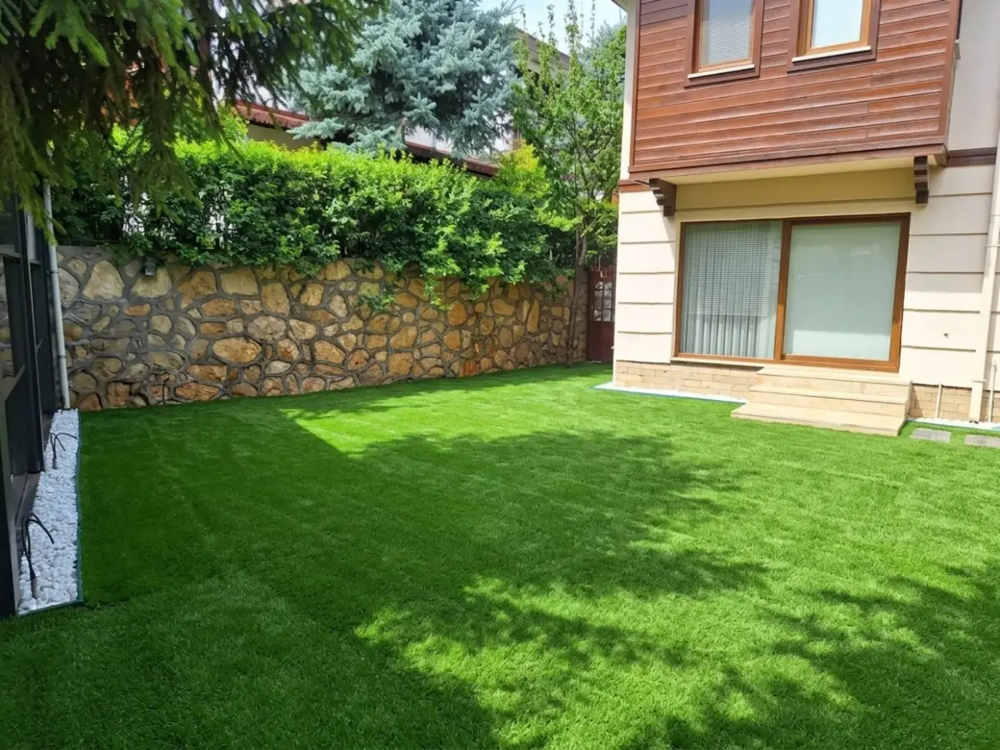
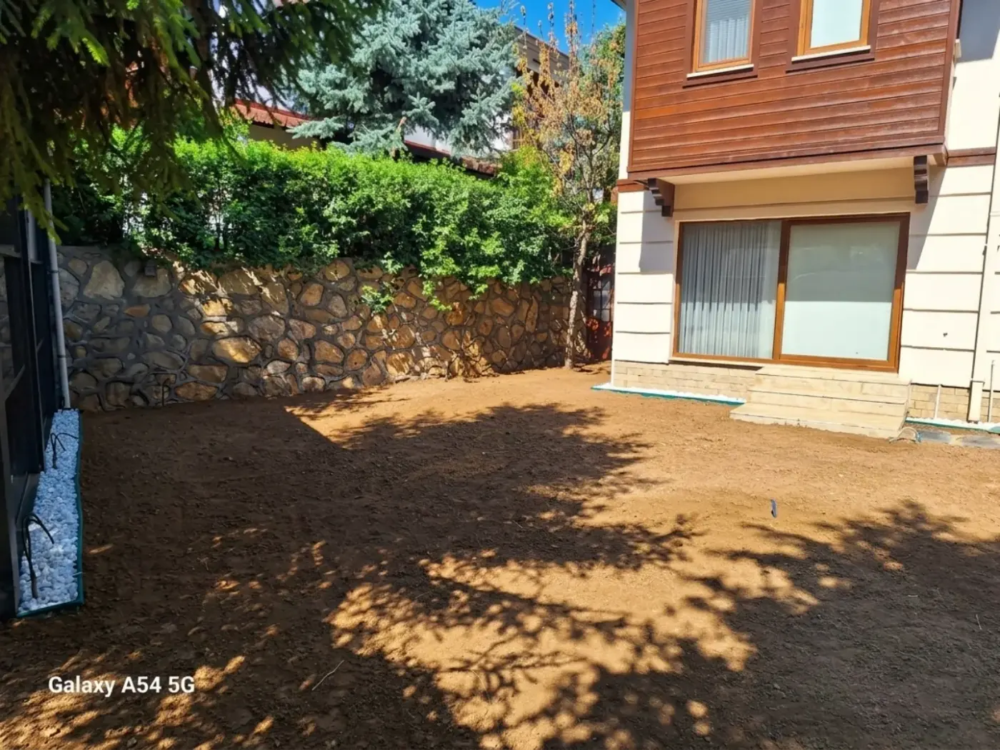

Peyzaj Mimarlık · Uygulama · Botanik Fidanlık
Doğanın dokunuşuyla yaşam alanlarınızı dönüştürüyoruz.
Villa bahçesinden site ortak alanına, kafe avlusundan şehir meydanına; tasarımı, uygulamayı ve bakımı tek elden üstleniyoruz.
- TasarımKeşif ve 3B projelendirme
- UygulamaBitki, sert zemin, ahşap
- BakımAylık periyodik hizmet
Projeler
Sahada tamamladığımız işler
Her kart bir proje. Fotoğrafların tamamını ve yapılan işleri görmek için tıklayın.
Önce · Sonra
Aynı bahçe, birkaç gün arayla
Malatya Bahçesaray Konakları’nda toprak hazırlığı, sulama altyapısı ve rulo çim serimi. Çizgiyi sürükleyerek farkı görün.


Hizmetler
Bahçenin her katmanı tek ekipte
Farklı ekiplerle uğraşmazsınız: toprak, bitki, taş, ahşap ve bakım aynı elden çıkar.
Proje filmi
Malatya İnönü Kapalı Çarşı
Alimoğlu Mermer bünyesinde tasarım, uygulama ve yönetimini gerçekleştirdiğimiz meydan ve çarşı projesi, havadan gece çekimiyle.
- Tasarım
- Uygulama
- Proje yönetimi
Nasıl çalışıyoruz
Keşiften bakıma dört adım
- 01
Keşif
Alanı yerinde görür, ölçü alır, ihtiyaçlarınızı ve bütçenizi dinleriz. Keşif ücretsizdir.
- 02
Tasarım
Bitki seçimi, zemin ve yapısal ögelerle projeyi çizer; 3 boyutlu görsellerle sunarız.
- 03
Uygulama
Altyapı, sulama, sert zemin, ahşap ve bitkilendirmeyi kendi ekibimizle tamamlarız.
- 04
Bakım
Teslimden sonra da buradayız: aylık bakım, budama ve mevsimlik yenileme.
Botanik Fidanlık · Kartal
Bitkinizi görerek seçin
İç ve dış mekân bitkileri, sukulentler, mevsimlik çiçekler ve formlu ağaçlar. Fidanlığımızın kapıları açık; geniş bitki koleksiyonumuzu yerinde keşfedin.
Adres
Yol tarifi alİletişim
Bahçenizi birlikte planlayalım
Alanınızı kısaca anlatın; keşif için sizinle iletişime geçelim.
- Adres
- Telefon
- E-posta
- Instagram@dmrpeyzajmimarlik